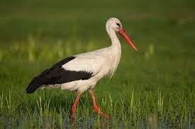
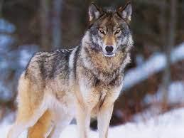
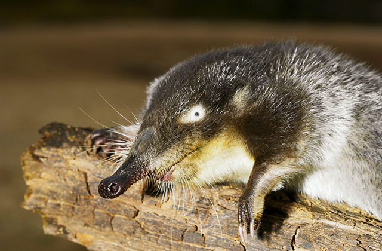

Белый аист
Белый аист - птица семейства аистовых, распространенная в Европе, Африке и Азии. Некоторые популяции находятся под угрозой исчезновения. В Республике Беларусь белый аист включен в Красную книгу и относится к видам, находящимся под угрозой. Численность популяции в Беларуси на данный момент стабилизировалась, но остается низкой.
Волк обыкновенный
Волк обыкновенный - млекопитающее семейства псовых, являющееся одним из символов дикой природы. В настоящее время волк обыкновенный находится под угрозой исчезновения в Республике Беларусь, где он занесен в Красную книгу. Численность популяции волка в Беларуси оставляет несколько сотен особей и пока стабилизировалась, но остается низкой.
Выхухоль
Выхухоль - млекопитающее семейства куньих, являющееся одним из наиболее распространенных видов куниц. Однако, на территории Республики Беларусь выхухоль является редким видом и включена в Красную книгу как уязвимый вид. Причиной сокращения популяции является уничтожение природных лесных угодий.